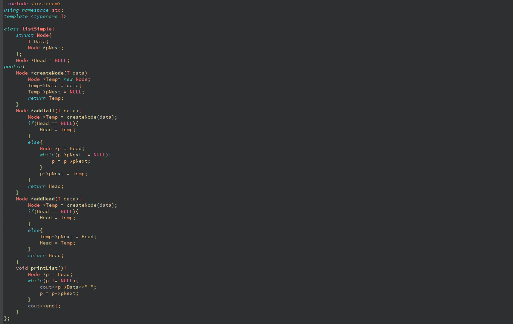
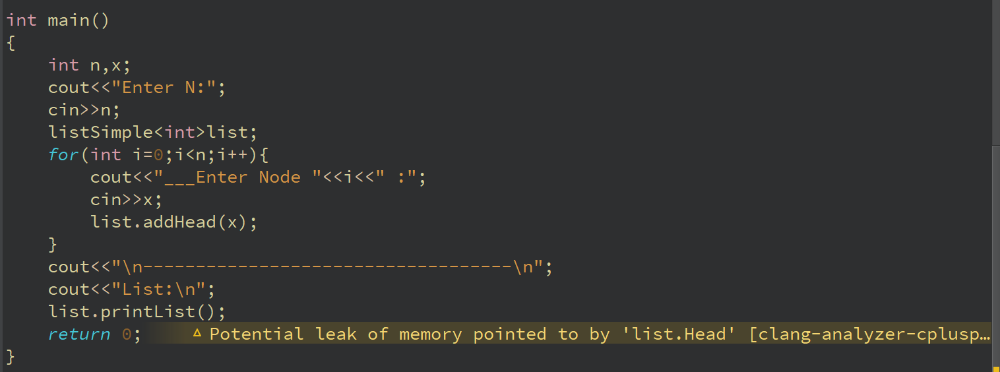

STL cung cấp các lớp và chức năng tiêu chuẩn thực hiện các thuật toán và cấu trúc dữ liệu phổ biến và được sử dụng rộng rãi.
Mỗi mẫu trong STL thuộc một trong các loại sau:
Trước khi nghiên cứu các mẫu STL cơ bản, chúng ta sẽ tìm hiểu thêm về mẫu và không gian tên.
Có hai loại mẫu trong C++: Function Templates va Class Templates
Function Templates cho phép bạn thực hiện các hành động giống nhau trên các loại dữ liệu khác nhau.
Giả sử chúng ta cần xác định giá trị lớn nhất của 2 giá trị theo biểu thức:a>b?a:b
Vì a và b có thể là số nguyên và số thực, bạn sẽ phải viết các hàm riêng biệt cho từng kiểu dữ liệu sử dụng:
int max(int a, int b) { return a > b ? a : b; } double max(double a, double b) { return a > b ? a : b; }
Rõ ràng, trong những tình huống như này, bạn phải sao chép cùng một đoạn mã, điều này sẽ làm tăng khả năng xảy ra lỗi trong mã. Thay vì làm như vậy, chúng ta chỉ cần tạo một mẫu phù hợp:
template< typename T > T max(T a, T b) { return a > b ? a : b; }
Mẫu hàm bắt đầu bằng từ khóa template như sau:
template< typename T >
Để gọi một hàm mẫu, bạn phải chỉ định giá trị cho tất cả các tham số mẫu.Ví dụ:
max<int>(2,7); max<double>(4.6,7.9); max<char>('a','b');
Trong nhiều trường hợp, trình biên dịch có thể xác định giá trị của tham số mẫu hàm từ đối số của nó. Ví dụ: khi gọi hàm max ở trên, không cần thiết phải chỉ định tham số mẫu (nếu nó khớp với kiểu của các đối số):
max(2,7); max(4.6,7.9); max('a','b');
Dưới đây là ví dụ sắp xếp một mảng thuộc bất kì kiểu số nào
template< typename T > void sort( T array[], int size ) { T t; for (int i = 0; i < size - 1; i++) for (int j = size - 1; j > i; j--) if (array[j] < array[j-1]) { t = array[j]; array[j] = array[j-1]; array[j-1] = t; } }
Chúng ta sẽ triển khai một danh sách liên kết đơn tuyến tính của các phần tử kiểu tùy ý dưới dạng một lớp mẫu
 Một lớp mẫu như vậy hoàn toàn được trừu tượng hóa khỏi kiểu cấu trúc dữ liệu đang được xử lý, vì trình biên dịch có thể thay thế bất kỳ kiểu dữ liệu nào do người lập trình xác định thay cho kiểu định danh T.
Không giống như các mẫu hàm, khi khai báo các biến lớp mẫu, tham số mẫu luôn phải được chỉ định, vì trình biên dịch không thể tự xác định kiểu dữ liệu.
Tất cả các định nghĩa của các lớp và hàm mẫu STL đều nằm trong không gian tên std
std::vector<int> a;
hoặc sử dụng:
using namespace std;
Ví dụ về vector số nguyên:
#include <iostream.h> #include <vector.h> using namespace std; int main(void) { vector<int> v; for(int i = 0; i < 10; i++) { v.push_back(i); } cout << "size = " << v.size() << "\n"; for (int i = 0; i < 10; i++) { cout << v[i] << " "; } cout << endl; for (int i = 0; i < 10; i++) { v[i] = v[i] + v[i]; } for (int i = 0; i < v.size(); i++) { cout << v[i] << " "; } cout << endl; return 0; }
Một ví dụ về cách làm việc với một vectơ có chứa các đối tượng:
#include <iostream.h> #include <vector.h> class kursant { char* fio; int age; char* rank; int group; float mark; public: kursant(char* f,int a, char* r, int g, float m): fio(f),age(a),rank(r),group(g),mark(m){} kursant(){} }; using namespace std; int main(void) { vector<kursant> v(3); v[0] = kursant("", 20, "", 101, 4.51); v[1] = kursant("", 20, "", 102, 4.23); v[0] = kursant("", 20, "‚", 101, 3.92); return 0; }
Một ví dụ về truy cập một vectơ thông qua một iterator
#include <iostream.h> #include <vector.h> using namespace std; int main(void) { vector<int> v; for (int i = 0; i < 10; i++) { v.push_back(i); } cout << "size = " << v.size() << "\n"; vector<int>::iterator p = v.begin(); while (p != v.end()) { cout << *p << " "; p++; } return 0; }
Ngoài các vùng chứa, thư viện STL còn chứa một tập hợp các thuật toán phổ biến nhất để xử lý các mảng dữ liệu. Mỗi thuật toán được thể hiện bằng một mẫu hàm hoặc một tập mẫu hàm. Do đó, thuật toán có thể làm việc với các vùng chứa rất khác nhau chứa các giá trị thuộc nhiều kiểu khác nhau. Các thuật toán trả về một trình lặp thường sử dụng phần cuối của chuỗi đầu vào để báo cáo lỗi. Các thuật toán không thực hiện kiểm tra phạm vi đối với đầu vào và đầu ra của chúng. Khi thuật toán trả về một trình lặp, nó sẽ là một trình lặp cùng kiểu với đầu vào. Các thuật toán trong STL thực hiện hầu hết các hoạt động vùng chứa chung chung như duyệt, sắp xếp, tìm kiếm, chèn và xóa các phần tử.
Các thuật toán được định nghĩa trong tệp tiêu đề <gorithm.h>.Sau đây là tên của một số hàm thuật toán STL được sử dụng phổ biến nhất.
for_each () - Thực hiện các phép toán trên mỗi phần tử của dãy
find () - Tìm lần xuất hiện đầu tiên của một giá trị trong dãy
find_if () - Tìm lần so khớp đầu tiên của một vị từ trong dãy
count () - Đếm số lần xuất hiện của một giá trị trong một chuỗi
count_if () - Đếm số lần một vị từ xuất hiện trong một tìm kiếm theo trình tự
() - tìm lần xuất hiện đầu tiên của một chuỗi dưới dạng một chuỗi con
search_n () - tìm lần xuất hiện thứ n của một giá trị trong một chuỗi
sort () - sắp xếp một trình tự với hiệu suất trung bình tốt
part_sort () - sắp xếp một phần của trình tự
stable_sort () - sắp xếp một trình tự theo thứ tự của các phần tử bằng nhau
Lower_bound () - tìm lần xuất hiện đầu tiên của một giá trị trong một chuỗi được sắp xếp
upper_bound () - tìm phần tử đầu tiên lớn hơn giá trị đã cho
binary_search () - xác định xem phần tử đã cho có nằm trong chuỗi đã sắp xếp
merge () - hợp nhất hai chuỗi đã sắp xếp
Ví dụ sau trình bày các kỹ thuật khác nhau liên quan đến các thuật toán thư viện tiêu chuẩn vectơ và C ++ , chẳng hạn như xáo trộn, sắp xếp, tìm phần tử lớn nhất và xóa khỏi một vectơ:
#include <iostream> #include <vector> #include <algorithm> // sort, max_element, random_shuffle, remove_if,... #include <functional> // greater, bind2nd // sử dụng không gian std using namespace std; int main() { int arr[4] = {1, 2, 3, 4}; // Khởi tạo vector vector<int> numbers(arr, arr+4); // Thêm số vào vector numbers.push_back(5); numbers.push_back(6); numbers.push_back(7); numbers.push_back(8); // vector có dạng như sau: {1, 2, 3, 4, 5, 6, 7, 8} // Lấy phần tử lớn nhất random_shuffle(numbers.begin(), numbers.end()); // In một mảng for (vector<int>::const_iterator it = numbers.begin(); it != numbers.end(); ++it) { cout << *it << ' '; } // Nhận phần tử lớn nhất, độ phức tạp O (n) vector<int>::const_iterator largest = max_element( numbers.begin(), numbers.end() ); cout << "phần tử lớn nhất" << *largest << endl; cout << "Chỉ mục của phần tử này" << largest - numbers.begin() << endl; // Sắp xếp các phần tử, độ phức tạp O (n log n) sort(numbers.begin(), numbers.end()); // Печатаем массив for (vector<int>::const_iterator it = numbers.begin(); it != numbers.end(); ++it) { cout << *it << ' '; } // Tìm vị trí của số 5 trong vectơ, độ phức tạp O (log n) vector<int>::const_iterator five = lower_bound(numbers.begin(), numbers.end(), 5); cout << << five - numbers.begin() << endl; return 0; }